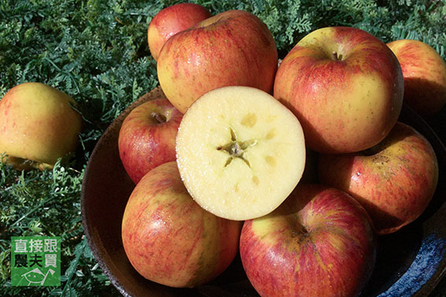
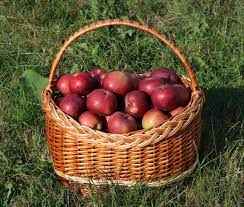

蘋果
水果之王
蘋果的營養價值如何，根據《讀者文摘》雜誌為十種對健康最有利的水果排名，蘋果高居第一位。中醫相信它可「生津潤肺，健脾開胃」；西方人常說：「一天吃一個蘋果，醫生遠離你。」

蘋果的營養分析
蘋果含有多酚類，易在水中溶解及被人體吸收。
「蘋果酚」
具有以下功效：一是抗氧化，可保持食物新鮮；
二能消除異味，可去魚腥、口臭；三是預防蛀牙；四能抑制黑色素、酵素的產生；
五能抑制活性氧發生，可預防多種疾病；六能抑制血壓上升，預防高血壓；七能抑制過敏反應。

蘋果的營養功效
美容養顏：在含維他命C的水果中，以蘋果的含量最高——大約100g蘋果中就含有10mg維他命C。維他命C可以有效抑制皮膚黑色素和形成，幫助消除皮膚色斑，增加血紅素，延緩皮膚衰老。
有益心血管功能：蘋果含多種抗氧化物，能防止血液內的自由基的侵襲、改善血管健康、減低發炎機會。每日進食蘋果者，血中低密度脂蛋白膽固醇（LDL，即壞膽固醇）降低，同時高密度脂蛋白膽固醇（HDL，即好膽固醇）卻增加了，蘋果對於心血管的幫助可見一斑。
防癌：蘋果所含的檞皮素（Quercetin）能與維他命C一同加強抵抗力，預防癌細胞的生長。蘋果所含的黃酮類化合物是降低癌症發病率的有效物質。經常食用蘋果的人們，肺癌的患病率降低一半，患其他癌症的機率也比一般人少20%。
資料來源: